Luminary
An app that aims to make navigating UNC’s campus easier and more accessible for students, especially those with limited mobility.

🖼️ Background
The University of North Carolina at Chapel Hill (UNC-CH) was built over 200 years with little to no consideration
for mobility challenges. In recent years, the university has made efforts to address some of its accessibility issues
such as the modernization of some elevators and the construction of a permanent ramp on the Old Well to allow students
with limited mobility to participate in the first day of class tradition to sip from the fountain. However, navigating
the campus remains difficult, especially for those with disabilities. To name just a couple daily obstacles; there is
constant construction blocking pathways, and the brick sidewalks are uneven and often missing bricks, leading to large,
deep puddles when it rains. These are the kinds of barriers that highlight the need for a tool to make navigating campus
easier, which is where Luminary comes in.
In early 2023, Tar Heels at the Table (THATT), an accessibility advocacy group on campus, reached out to App Team Carolina,
a nonprofit organization on campus that builds iOS apps, with the idea to make an app that informs users about temporary
and permanent accessibility obstacles on campus and provides alternate routes to locations based on the user’s unique
accessibility preferences. As a founding executive member of App Team Carolina, I was super eager to take on the project
not only a UI/UX designer, but also as a team lead for the project. This means that in addition to creating the designs
for the app, I also guide a dynamic team of developers, designers, marketers, and product managers toward release to the
App Store.
This project is particularly dear to me as it aligns perfectly with my passion for creating inclusive designs that work
for everyone, regardless of ability. Luminary has also been my first opportunity to lead a project from initial concept
through to completion, allowing me to apply my design philosophy in a meaningful way that directly impacts my campus community.
🔄 Process
Preliminary Research
After partnering with THATT to define the app's vision, our team needed to gain deeper insights into the specific accessibility
challenges students encounter on campus. I collaborated with our product managers to develop a comprehensive survey where
respondents could identify issues from a checklist, add new concerns, and share personal experiences navigating UNC. To reach
our target audience effectively, we distributed the survey through both THATT's network and UNC's Equal Opportunity and Compliance
office, connecting with students with disabilities and accessibility advocates across campus.
The survey results below highlight the most significant accessibility barriers on UNC's campus, showing the percentage of respondents
who identified each issue as impacting their daily campus navigation:
Defining Features
To progress from research insights to development planning, I partnered with our product managers to identify and prioritize Luminary's core features. Through careful evaluation of user needs, technical feasibility, and development timelines, we established our minimum viable product criteria. The following four features were selected as essential components that would deliver a comprehensive solution to campus accessibility challenges while remaining achievable within our projected timeframe:
Following our core feature prioritization, we identified three additional capabilities that, while valuable, were not essential for our
initial launch. These features were categorized for inclusion in Luminary's subsequent release, balancing enhanced user experience with
development resources:
We also identified two aspirational "moonshot" features that would significantly enhance Luminary's value proposition but exceed our
current technical capabilities and resource constraints:
Competitor Analysis
Before developing Luminary's interface and feature set, it was essential to understand how existing navigation solutions
address—or fail to address—accessibility concerns. While no direct competitors offer campus-specific accessibility navigation,
several widely-used mapping applications provide related functionality that users may already be familiar with.
The following competitive analysis examines how Luminary's proposed features compare to established navigation platforms like Waze,
Google Maps, and Apple Maps. This comparison highlights the significant gaps in accessibility navigation that Luminary aims to fill,
while also identifying successful patterns from these platforms that could inform my design decisions.
| Features & Capabilities | Luminary | Waze | Google Maps | Apple Maps |
|---|---|---|---|---|
| User-Reported Obstacles | ✅ Specialized for accessibility issues with detailed categorization | ⚠️ Traffic and road hazards only | ⚠️ Traffic and road hazards only | ⚠️ Traffic and road hazards only |
| Accessibility-Focused Routing | ✅ Routes customized based on individual accessibility needs and preferences | ❌ No accessibility customization | ⚠️ Basic wheelchair-accessible routes only | ⚠️ Limited wheelchair-accessible options |
| Campus-Specific Navigation | ✅ Detailed campus mapping including pedestrian-only paths | ❌ Limited to roads | ⚠️ Some campus paths but incomplete | ⚠️ Some campus paths but incomplete |
| Customizable Accessibility Preferences | ✅ Highly personalized based on specific mobility needs | ❌ No accessibility preferences | ⚠️ Limited wheelchair toggle only | ⚠️ Limited accessibility options |
| Turn-by-Turn Directions | ✅ Pedestrian-focused with accessibility considerations | ⚠️ Vehicle-focused | ✅ Available for multiple modes | ✅ Available for multiple modes |
| Community Contribution | ✅ Campus community focused on accessibility | ✅ Driver community focused on traffic | ⚠️ Limited community features | ⚠️ Limited community features |
| Obstacle Verification System | ✅ User verification of reported issues | ✅ User verification of hazards | ✅ User verification of hazards | ✅ User verification of hazards |
Information Architecture
At this point, I made the following diagram, which shows Luminary's comprehensive information architecture. This visual representation maps the logical progression between key screens and features, highlighting how users will navigate through the application to accomplish their accessibility-focused goals.
Wireframes
When THATT approached App Team Carolina with the Luminary concept, they provided preliminary design mockups to illustrate their vision. These proof-of-concept designs, displayed below, were my starting point and reference for understanding THATT's core requirements and expectations for the app. While basic in execution, these initial mockups captured essential functionality and helped establish a shared understanding of Luminary's purpose before I began the formal design process.
With THATT's proof-of-concept as reference, I began translating their vision into more structured design artifacts. I started by
creating hand-drawn sketches to explore different layout options and user flows, allowing for rapid ideation and iteration.
These preliminary sketches evolved into basic wireframes that defined the fundamental structure and information hierarchy of
Luminary's interface. I then presented these wireframes to our cross-functional team of developers and product managers to gather
early feedback on the design direction and validate that the proposed structure would effectively support our technical requirements
and user needs.
Branding
Before advancing from wireframes to a high-fidelity prototype, I needed to establish a distinctive visual identity for the app.
The project initially came to App Team Carolina under the name "Polaris." However, after conducting thorough research on existing
applications, products, and online search results—particularly within the App Store—I determined that a rebrand was necessary to
create a more unique and memorable presence.
To find an appropriate new name, I explored synonyms related to wayfinding, navigation, and guidance. I compiled the following
list of potential options and collaborated with the team to evaluate each candidate. After careful consideration, we collectively
selected "Luminary" as the optimal choice, feeling it best conveyed the app's purpose of illuminating accessible paths through
campus while establishing a distinctive brand identity.
To complete Luminary's visual identity, I developed several app icon concepts and presented them with various background
color options to my team. My approach focused primarily on clean, minimalist designs that would be instantly recognizable
at small scales, though I included one more playful concept to offer stylistic range and gauge preference for a potentially
more whimsical direction.
After reviewing all options collectively, our team reached consensus that the lightbulb concept most effectively communicated
the app's mission—illuminating accessible pathways through campus—while also offering the strongest visual recognition factor.
This alignment between symbolism and functionality made it the clear choice for Luminary's visual representation.
For the color palette, I selected a medium blue as the primary brand color. This choice was deliberate, as blue conveys
reliability, accessibility, and clarity—qualities central to Luminary's purpose. Additionally, I anticipated this blue would
function effectively as an accent color throughout the interface, providing visual continuity while meeting accessibility
standards for contrast and readability.
🎨 Design
First Version
Below are videos of some of the main flows of the first version of Luminary, which were created and iterated upon from March 2023 through May 2024.
Viewing favorites, searching a location, and routing.
Submitting a new report.
Viewing report activity and updating an existing report.
Luminary's settings.
Current Version
By August 2024, I had completed two summer internships as a product designer since making the first version above,
and I knew there was a lot of room for improvement. I decided to revamp the design with the main goals of making it
cleaner, more unique, more intuitive for users, and more interactive in the prototype.
The biggest updates made for this new version were:
Removing the tab bar because I felt navigating the app was aimpler without it.
Adding an onboarding sequence to collect the obstacles the user needs to avoid in routing and add favorites before entering the app.
Adding a new feature called quick reports, which allows users to report common obstacles without having to fill out the form every time.
Increased rounding on corners where applicable to achieve a more modern feel.
Luminary's onboarding sequence.
Revamped design of reports and favoriting.
Submitting a quick report.
Updating an existing report from the map.
🌎 Impact
Luminary has the potential to transform daily life at UNC-Chapel Hill by democratizing campus navigation for everyone,
regardless of mobility needs. By crowdsourcing real-time accessibility information, the app could eliminate the
frustrating trial-and-error experience many students, faculty, and visitors with disabilities currently face when
traversing campus. Beyond its immediate practical benefits, Luminary represents a cultural shift toward collective
responsibility for accessibility—each user who reports an obstacle contributes to a more inclusive campus environment.
The data collected could also prove invaluable to university administration by highlighting persistent trouble spots
that require permanent infrastructure solutions, potentially influencing future campus development priorities. As
adoption grows, Luminary could foster greater independence for individuals with mobility challenges, increase their
participation in campus activities, and ultimately help transform UNC from a historically inaccessible campus to a
model for how technology and community engagement can overcome physical barriers in educational spaces.
⏭️ Next Steps
Our team continues to make progress on Luminary and is preparing to launch to the App Store in April 2025.